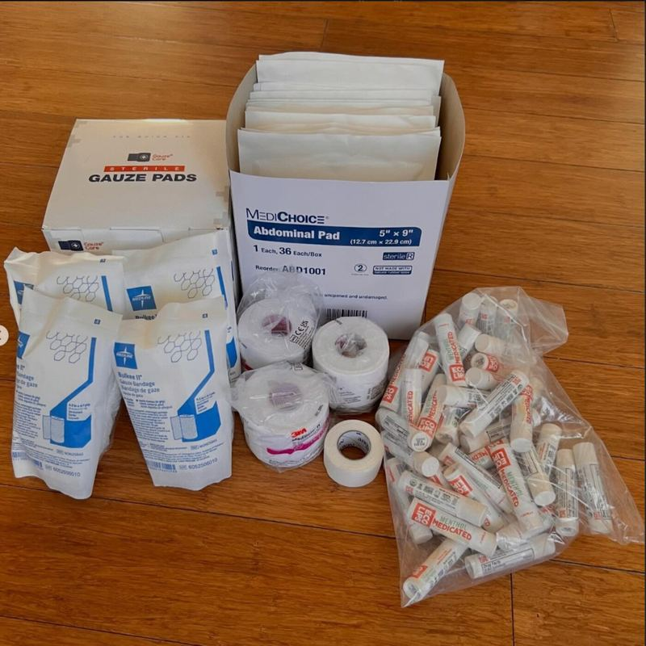

Cedar Rapids & Marion, Iowa
Medical supply kits
We assemble hygiene and first-aid kits by hand and bring them to unhoused neighbors and local shelters across Cedar Rapids and Marion. Each kit covers wound care, hygiene and everyday comfort.
How our kits work